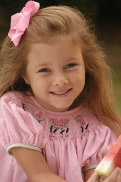

|  |
KIRA Winter 2005 Kira just got her cast off and is limping on a healed foot. Her muscles are trying to regain their tone and vigor. We play hopscotch on the driveway. Ballet lessons may be in her future for fun therapy. She recently won the 'Reflections art contest' with a watercolor of her Dad. She read the most books in her class before Christmas. The "Junie B. Jones" series is a favorite right now. She loves cooking, sewing, arts and crafts of any kind, writing, cleaning, and anything girlie. She was invited to a sleepover birthday party where the next youngest girl was 10! She just seems to fit in with the older girls. Want to know more about Kira? CLICK HERE for her spotlight. |